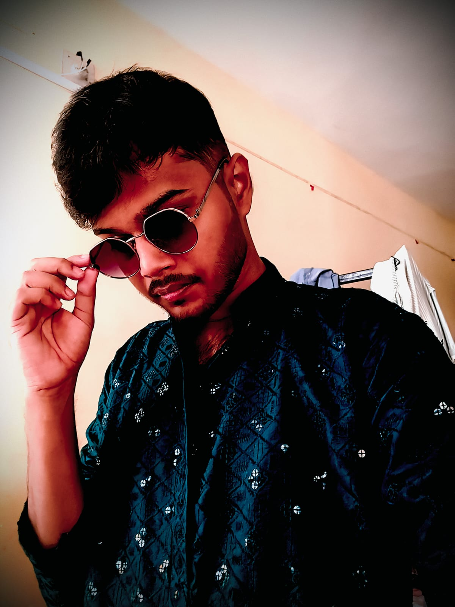

About

Hello! My name is Biswajit Senapati. I completed my secondary education (10th standard) from Srinath Chandra Simanta High School, Jaleswar, Balasore, where I built a strong academic foundation. I then completed my higher secondary education (11th and 12th standards) from Fakir Mohan Higher Secondary School, Balasore, which helped me develop a deeper interest in science and technology. Currently, I am pursuing my Bachelor of Technology (B.Tech) degree at Silicon University, Bhubaneswar. I am continuously working on improving my technical skills and practical knowledge. I am enthusiastic about learning new technologies, solving problems, and growing as an engineer to build a successful and meaningful career. I am a motivated and dedicated learner with a positive attitude toward continuous improvement. I believe in teamwork, effective communication, and consistent effort. My goal is to grow as a skilled engineer and contribute meaningfully to the technology industry while continuing to learn and evolve professionally. Beyond academics, I believe in continuous self-improvement and lifelong learning. I value teamwork, time management, and effective communication, which help me work efficiently in both individual and group environments. I am always eager to take on new challenges that allow me to grow personally and professionally. My long-term goal is to become a skilled and responsible engineer who can contribute innovative solutions to real-world problems. I aim to build a strong career in technology while maintaining a balance between professional growth and personal values.
Goto Home